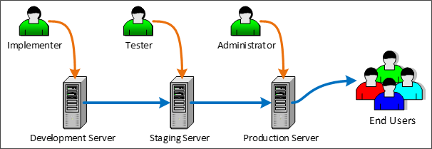

|
|
Lesson Contents | In this Lesson, you will learn the best practices for importing and exporting between development, test, and production systems. |
When importing and exporting content, there are a number of vital considerations that need to be kept in mind. While import/export is a routine procedure, it must be done correctly to avoid serious problems. As such, it is important to discuss some best practices—not only in the import and export process itself, but in some basic practices for configuring Process Director objects.
In an ideal environment, there would be three different Process Director installations:

In Process Director, Content List Folders have two purposes.
First, they make it easier to establish permissions that allow different classes of users to access different Content List objects. The best practice is to set permissions only on folders, and not on individual Forms, Knowledge Views, Business Rules, etc. Permissions are inherited from parent objects, and when new child objects are created, they automatically have the same set of permissions as the folder in which they are contained. (If you change permissions on the folder, however, the permissions on objects within the folder will not be changed unless you click one of the “Replicate Current Permissions to All Child Objects Only” buttons.)
Different folders might have different permissions to ensure that administrators, process managers, and users are only granted access to objects appropriate to their roles. For example, you might have certain Knowledge Views that only managers can access, while other Knowledge Views can be accessed by any user. In this case, you could create a "Manager KViews" and a "User KViews" folder. By setting the permissions of the Manager KViews folder to allow only Managers to view it, any Knowledge View that you place in the folder will inherit those permissions, and will not be accessible by other users.
It is important to remember, however, that permissions do not export. The first time you create a folder manually or via the import process, you must explicitly set its permissions. Once you have done so, however, any new objects created or imported into the folder will automatically inherit the folder's permissions. (Remember to replicate permissions to child objects if the folder already contains objects.) To use our example of the Manager KViews folder above, if you create new objects in the Manager KViews folder on Staging, then, when you reimport the folder to Production, all of the new objects will immediately be restricted to the permissions you set on the Manager KViews folder in the Production system. Because permissions do not export, you can set much less restrictive permissions on the Manager KViews folder in the Development environment to allow non-managers to test the system with non-sensitive data. When you re-import the folder to Staging and Production, the full set of access restrictions will be automatically applied to all the objects in the folder on the Production system.
Structuring your folders properly makes it easier to deploy individual projects or implementations. The best practice for structuring folders is to organize them by process/project, and include subfolders for various content list object types. For instance, look at the sample structure below.

The image above is an example of structuring an implementation project logically. The top-level folder provides the name of the process you are modeling, in this case, a New Employee Onboarding process. All of the individual Forms, Knowledge Views, etc. are organized into the lower-level folders. With this type of organization, any changes you make to the process are contained inside this folder structure, which allows you to simply export the New Employee Onboarding folder, and import it into production, with all of its content list objects intact, and without having to worry about interfering with any other project.
There are, of course, some exceptions to project/process-based organization. For instance, shared objects, like Datasources, Goals, and Business Values should probably each be grouped together in their own folder at the root level of the partition. You may have noticed that the Custom Tasks are organized in this fashion. You really shouldn't export/import data sources between servers, to avoid mixing connections to test data with production data. The Data Sources should have exactly the same name, but the best practice is to create your Production and Staging data sources manually. The important thing to remember is that you need to keep the folder structure exactly the same on your staging and production server, so that shared objects have the same relative paths on both servers.
Also, remember that any Datasources that are pointing to an external production system may need to be changed on the test server to point to an external test system. The same may be needed for some Custom Tasks that do not use a Datasource but connect to the external application directly, such as the Web Service CT. For the most part this is important for external systems that are being updated from Process Director. If Process Director is just reading from the external system this may be less of an issue, but something you should keep in mind.
You may also want to create a root level business rules folder for those business rules that can be used in multiple projects. Business rules that are specific to a single project can be contained in the project's folder structure. Similarly, some common sub-processes might be organized into a root-level folder as well.
With the above in mind, a sample partition might look something like this:

Notice that the root folder contains folders for all of the shared objects, as well as the high-level organization for different types of processes the organization has implemented. At the second level, the HR Process folder contains the individual process for various Human Resource operations. Finally, at the third level, the New Employee Onboarding process contains folders for all of the Content List objects that are needed to run that specific process. BP Logix recommends that you implement a similar type of folder structure to make importing/exporting projects (not to mention simply finding things) easier.
Users and User Groups are not imported or exported in Process Director. So, be sure that any test users or groups to which a project refers in the Development environment also exist in Staging and Production. If you are syncing users in all three systems from Active Directory, this will not usually be a problem. But there may be cases where you have manually created users in the Development system, and in such cases, the users will have to be manually created on the Staging and Production systems as well.
So, make sure that all users match in your test and production environments. If they do not, and you attempt to import a project with a reference to a user that doesn't exist on the target system, an import error will occur. (Keep in mind, though, that explicit references to individual users within a workflow application are not a good idea to begin with.)
Speaking of import errors, if an import throws an error or warning...stop. Fix the problem and try again. There are a number of errors that are common when importing, such as the user mismatch we just discussed. Another very common error is forgetting to add a data source for a dropdown that uses the Fill Dropdown from DB custom task. Commonly, the problem arises when you create a new data source on the development server, but neglect to create a matching data source on the production system before performing the import. The bottom line is that if you see an import error, your project didn't import properly, so you need to fix the problem and try to import it again.
Another important caution to remember is to avoid renaming any Content List object on the target system (such as the Production system) that ever may be updated via import. Doing so can result in no end of problems the next time you perform an import. If you do need to rename an object, you must do that manually on the destination (Production) server prior to doing the import, not after.
To understand why, we need to delve down a bit into how Process Director tracks objects, and how the import process works. Process Director is database-driven, meaning that every single object in Process Director is stored in a database. The database uniquely identifies every object by assigning it a special identifier known as a Globally Unique Identifier (GUID). A GUID1 is a128 bit, 36 character value, and is a series of hexadecimal numbers that are created using algorithms that ensure uniqueness. The GUID is generally represented in the format:
aa213c6f-a8aa-454f-a04d-30b56fd2e493
GUIDs don't mean anything to us humans, of course, so we always provide logical names, like "Manager KViews", that we humans can understand when we create objects. But, in almost every case, Process Director never uses the name. It always uses the GUID. Two important exceptions to GUID-based identification are import/export, and when referencing objects and controls via the system variable syntax, e.g. {RULE:rulename}, {:FieldName}.
But, GUIDs cannot be exported or imported because they are unique. An object on the Staging system will have a completely different GUID than the parallel object on the Production system. Since that is so, the import process has to try and match the logical name that we have given the object when performing an import.
So, to return to our Manager KView folder, if we change the name of the folder on the Production system to "Mgr Kview", then the next time we import from Staging, problems will arise. The import process will be looking to match the Manager KView folder on Staging with the same folder on Production. Because we've changed the name on production, however, the import cannot match "Mgr KView" to "Manager KView". It will, therefore, ignore the Mgr KView folder, and create a new Manager KView folder. Similar problems arise if you rename the folder on the Staging system before importing it to Production.
The new Manager KView folder will not have any of the restrictive permissions you placed on the original folder. As far as the Production system is concerned, the newly-imported Manager KView folder is a completely new folder, with the default permissions that will allow anyone to access it. You now have a security hole in your Production system, while the secured object has been orphaned, with all of the imported links now pointing to an unsecured folder.
So, it is vitally important to remember that you should only rename objects in the target environment when there is a real need, and if you do, you must manually rename it in the source environment.
Now, at this point, you might be thinking that you could simply delete the orphaned object. But wait, it gets worse.
If there are other objects on the production system that were not part of the import, and that were linked to the Mgr KViews folder, those links still exist. Those object links were not replaced with links to the Manager KView folder. So, now, your production system may have some objects linked to the Mgr KViews folder, while other objects are linked to the unsecured Manager KViews folder.
If you simply try to delete an orphaned object, the remaining links to orphaned object will now be broken, so you may break all of those related projects as well. But, even worse, when you delete an object, you also delete every instance of that object. That might not be a big deal if the object is just a KView, but if the object is a Process Timeline, Workflow, or Form, then every single instance of that object, and all of the data associated with those instances, will be deleted from the system. You have just deleted all of the historical data in your system for that process or Form. Also, you will delete any link that any other object has to the object, so may destroy more than one process.
If you find yourself in a situation like the above, where you have renamed an object, performed an import, and now have two objects, you have two options. First, you can call BP Logix Technical Support for assistance, which is your best option. Second, you can try to fix the problem yourself by following the procedure below:
With the above in mind, you may conclude that, as long as you aren't importing or exporting, you can rename or delete objects that don't have instances, like KViews or Business Rules, without running into problems. But, that's not completely true either, because, in addition to importing/exporting, there is one other case where the name of the object, rather than the GUID, is vitally important. Sometimes, you refer to objects through System Variables. For instance, you might have a condition in a process or Form that relies on the result of a Business Rule where you've used a System Variable to return the result, e.g., {RULE:My Rule Name}. System Variables are name-based, not based on the GUID. That means that if you rename or delete an object that is named in a System Variable, you will break the object that uses the System variable as a reference.
The general rule, therefore, is that deleting object definition in the content list from a Production system is an extraordinarily bad idea. If you do so, and eliminate vital historical data, then you have to try to restore your database which is a complicated and very risky course of action.
So, to avoid the massive headaches any deletion can cause, only Partition Administrators should be able to delete anything on Production. Moreover, no actual user should ever be given partition administration privileges, in order to ensure that no user can accidentally delete anything. Instead, create a specific Partition Administrator account, and require administrative personnel to log out of their personal accounts and log into the Partition Administrator account before deleting anything. And even then, they should take extraordinary care before deleting an object. There are, in fact, a number of other security options you should consider as well, all of which can be found in the Securing Process Director section of the System Administrator's Guide.
_____
1 GUIDs generated from random numbers are so large that the probability of the same number being generated randomly twice is negligible. Assuming uniform probability for simplicity, the probability of one duplicate would be about 50% if every person on earth owned 600 million GUIDs. (Wikipedia)
2 In mathematics and computing, hexadecimal (also base 16, or hex) is a positional numeral system with a radix, or base, of 16. It uses sixteen distinct symbols, most often the symbols 0–9 to represent values zero to nine, and A, B, C, D, E, F (or alternatively a, b, c, d, e, f) to represent values ten to fifteen. (Wikipedia)